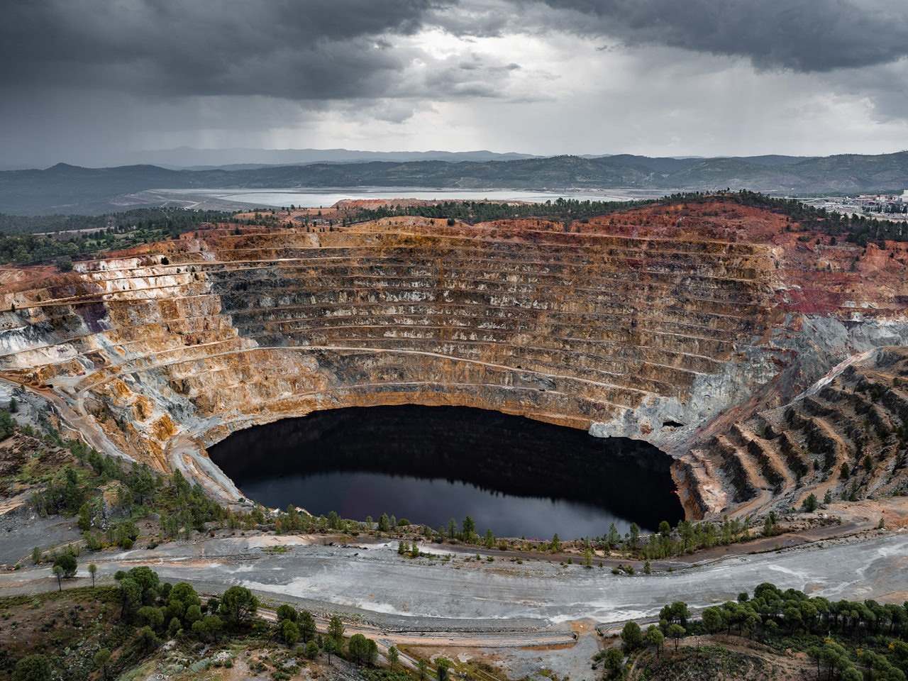

Antropocene
L'Epoca Umana
Un viaggio visivo e scientifico attraverso le cicatrici impresse dall'umanità sulla Terra. Analisi del docufilm diretto da Baichwal, Burtynsky e de Pencier per comprendere come l'homo sapiens sia diventato una vera forza geologica globale.
01 / Il Docufilm
Cos'è "Anthropocene: L'Epoca Umana"?
Frutto di una collaborazione quadriennale tra la regista Jennifer Baichwal, il fotografo Edward Burtynsky e il direttore della fotografia Nicholas de Pencier, questo lungometraggio del 2018 è una testimonianza visiva scioccante del nostro impatto sul pianeta.
Il film segue l'Anthropocene Working Group, team internazionale di geologi e scienziati che raccoglie prove fisiche nei sedimenti per stabilire se l'umanità abbia spinto la Terra fuori dall'Olocene — l'epoca di stabilità climatica — inaugurando una nuova era imprevedibile.
Le riprese spaziano dalla Cina alla Kenya, dall'Artico alla California: un ritratto globale e senza sconti della civiltà dei consumi.
02 / Il Concetto
Cosa significa "Antropocene"?
Etimologia
Dal greco ánthrōpos (uomo) + kainos (nuovo). Coniato da Eugene Stoermer e reso famoso dal Nobel Paul Crutzen nel 2000: l'uomo da semplice inquilino è diventato il principale alteratore dei cicli vitali della Terra.
Quando è iniziato?
La scienza indica gli anni '50 del '900 come data d'inizio — la Grande Accelerazione. I test nucleari lasciarono radionuclidi come firma chimica indelebile nei terreni di tutto il mondo.
Chi lo studia?
L'Anthropocene Working Group analizza carotaggi di ghiaccio e sedimenti marini cercando il Golden Spike: la prova stratigrafica che separi nettamente il passato geologico dal presente modificato dall'uomo.
Perché è importante?
Non è una disputa accademica. Riconoscere l'Antropocene significa ammettere a livello politico e legislativo che siamo i soli responsabili della sopravvivenza dei futuri ecosistemi.
03 / Le Prove
I Segni dell'Impatto Umano


04 / Riflessioni
Cosa possiamo fare?
Il documentario si apre e si chiude con una scena simbolica: il rogo di 105 tonnellate di zanne d'avorio in Kenya, confiscate ai bracconieri. Questo gesto mostra che l'impatto umano può trasformarsi in presa di coscienza e azione attiva. Se siamo diventati forti come un asteroide, abbiamo anche la responsabilità di invertire la rotta. Rinnovabili, economia circolare e consumo critico non sono scelte opzionali, ma passaggi obbligati.
"Siamo la prima generazione a sentire gli effetti del cambiamento climatico e l'ultima ad avere il potere di agire prima che sia troppo tardi."
— Anthropocene: L'Epoca Umana, 2018